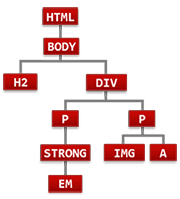

Il existe 5 méthodes de positionnement des boîtes des éléments HTML : statique, relatif, absolu, fixe et flottant.
Mais quelque soit la méthode utilisée, le positionnement se fait toujours par rapport à un bloc conteneur.
Les notions de boîtes (Positionner des éléments -> C'est dans la boîte) et de relations parents/enfants ( Principes généraux -> Document Object Model) vues précédemment doivent être assimilées pour aborder cette partie.
Un document HTML est composé d'éléments qui contiennent d'autres éléments. On retrouve donc des boîtes de type bloc qui contiennent d'autres boîtes (de type bloc et/ou en ligne) et qui sont appelées des blocs conteneurs.
Le bloc conteneur sert à déterminer le positionnement et éventuellement les dimensions des boîtes qu'il contient. Les propriétés de style avec une valeur relative (pourcentage, em, etc.) sont calculées à partir de la valeur correspondante du bloc conteneur.
L'exemple suivant montre l'effet d'une valeur relative de la taille des polices de caractères et de la largeur des boîtes des éléments imbriqués.
La taille de la police de caractères dans les 2 premiers paragraphes
est de :
16 pixels (pour le body) * 0.8 (pour le div) * 0.8 (pour le
paragaphe) = 10 pixels
La taille de la police de caractères dans le dernier paragraphe
n'est pas la même que dans les paragraphes précédents :
16 pixels (pour le body) * 0.8 (pour le paragaphe) = 13 pixels
On a les mêmes différences dans la largeur des paragraphes. Pour les
2 premiers on aura par exemple :
800 pixels (largeur de la fenêtre) * 70% * 50% = 280 pixels
alors que pour le dernier on aura :
800 pixels (largeur de la fenêtre) * 50% = 400 pixels
Les valeurs relatives sont à manier avec précaution pour éviter des cumuls qui peuvent amener à ce que des éléments de même type (exemple des paragraphes) n'aient pas la taille de police ou la même largeur dans la page.
Les spécifications CSS expliquent comment est défini un bloc conteneur.
Il existe un bloc conteneur initial dont les dimensions sont celles de la zone d'affichage du navigateur (viewport). C'est dans ce bloc conteneur initial que sont contenus tous les blocs affichés à un moment donné par le navigateur. Quand l'utilisateur redimensionne la fenêtre du navigateur, les dimensions de ce bloc conteneur initial changent et tous les positionnements et dimensions de son contenu doivent être recalculés pour que le réaffichage tiennent compte de ces modifications.
Pour les éléments en positionnement statique (le positionnement par défaut) ou relatif, le bloc conteneur est constitué par l'ancêtre bloc le plus proche dans la hiérarchie.
Pour les éléments en positionnement fixe, le bloc conteneur est constitué par le bloc conteneur initial (ie la zone d'affichage de la fenêtre du navigateur - viewport -).
Pour les éléments en positionnement absolu, le bloc conteneur est l'ancêtre le plus proche en positionnement relatif, absolu ou fixe. Le positionnement est calculé par rapport à la bordure de l'ancêtre, soit le contenu plus la marge interne.
S'il n'y a pas d'ancêtre correspondant, l'ancêtre est le bloc conteneur initial.
Ces règles de définition du bloc conteneur d'un élément deviennent très importantes à partir du moment où vous positionnez des boîtes en absolu car si vous ne les avez pas bien assimilées vous pouvez arriver à des résultats inattendus.
| L'arbre DOM simplifié du code précédent est le suivant : | Les conteneurs des éléments sont les suivants : | Si on
positionne div et img en absolu, les
conteneurs deviennent :
|
||||||||||||||||||||||||||||||||||||||||||||
|  |
|
|
||||||||||||||||||||||||||||||||||||||||||||
|
Quand on positionne en absolu l'élément
Quand on positionne en absolu l'élément |
||||||||||||||||||||||||||||||||||||||||||||||